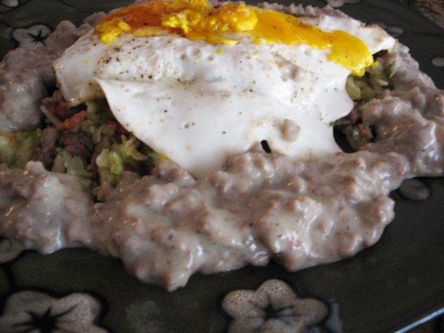

Delicious Moosh

This delicious Moosh is sure to destroy your apetite.
It's funky taste and even funkier smell is sure to make
an imprint and everlasting memory, branded into your brain.
This recipe is as easy as it gets, and you can replace any ingredient
you want with virtually anything else.
Ingredients
- 4 cups of left over rice. The older the better
- 2 cups of pickle juice
- Half a pound of either ground beef, or pork
- 2 cups of pepper corns
- 1 cup of almond flour
- 1 cup of water
- 1 gallon of mustard. This ingredient is optional.
Traditionally uses a lot of mustard, but to foreign
tongues it might be too much.
- 4 mongolian goose eggs
Steps
The great thing is its only 2 steps!
- Put all ingredients into one pot and cook on medium
high for 4 hours
- Dish up and serve with fried egg on top
home page